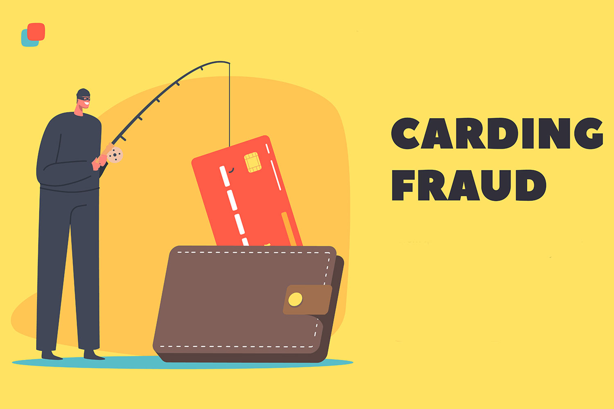

El nuevo rumbo de la compañía de Sam Altman hacia una entidad con fines de lucro ha provocado que Tim
Cook eche el freno de mano y no participe en la ronda de inversión de los creadores de ChatGPT
OpenAI planea duplicar el precio de la suscripción a ChatGPT: la primera subida llega a finales de año
OpenAI está de cambios. Hace unos días conocíamos la salida de la directora de tecnología, Mira Murati, influenciada
por el nuevo rumbo financiero por el que quiere apostar la compañía desarrolladora de ChatGPT: convertirse en una entidad
con fines de lucro para aumentar sus ganancias. «Era el momento adecuado», argumentó Murati, quizás por la idea de atajar
proyectos personales o porque no estaba de acuerdo con el nuevo planteamiento de OpenAI.
Sea como fuere, no es la primera que se baja del barco. También se ha marchado un jefe de equipo de producto que OpenAI
había contratado en Meta y el cofundador de OpenAI, Ilya Sutskever, abandonó la compañía a principios de año tras una batalla
en la junta directiva en la que Altman fue expulsado temporalmente de la empresa.
Ahora, Apple no abandona a OpenAI, pero sí que decide no financiar a la compañía, a diferencia de otras grandes tecnológicas
como Nvidia o Microsoft. OpenAI está recaudando fondos que podrían situarla en torno a los 150.000 millones de dólares, lo que
la convertiría en una de las empresas privadas más valiosas del mundo, según medios estadounidenses. Aquí entraba en juego Apple,
que iba a depositar 6.500 millones de dólares a la suma. Sin embargo, tal y como asegura 'The Wall Street Journal' hace unas
semanas, esto no ha sucedido.
Pese a que, de momento, se desconocen los motivos por los que Apple habría decidido no aportar dinero a OpenAI, se especula
que los cambios en la estructura directiva de la compañía así como la reestructuración de la startup habrían influenciado en
que los de la manzana echaran el freno.
Para leer mas información sobre esta noticia pinchar aquÏ
Hay diez cosas a las que debes prestar atención para evitar caer en la trampa
¿Cuánto tarda una inteligencia artificial en robarte tus contraseñas?: esta página te lo dice

La información bancaria, en concreto la de tarjetas de crédito, se encuentra entre los objetivos más interesantes para el cibercrimen.
Recientemente, la Oficina de Seguridad del Internauta (OSI) ha realizado una publicación la que alerta sobre el tipo de estafa conocida
como 'carding', en la que los criminales sacan partido de la información de tarjetas robadas.
Los ciberdelincuentes utilizan distintas técnicas para obtener los datos de las tarjetas de las víctimas. Una de las más extendidas es
el 'phishing' o 'smishing'. En este caso, como hemos explicado en tantas otras ocasiones, el criminal se aprovecha de un correo
electrónico o un SMS -incluso, en algunos casos, de llamadas telefónicas- en los que suplanta a un tercero, normalmente a una empresa o
a una institución pública, para que el usuario entregue la información sin darse cuenta.
También hay casos en los que recurren a código malicioso capaz de robar la información de los dispositivos afectados e incluso hacerse
con los datos capturando las pulsaciones que realiza el usuario en el teclado.
Además, los delincuentes pueden aprovecharse de bases de datos con algún fallo de seguridad, webs fraudulentas o lectores con
comunicación inalámbrica RFID o NFC capaces de obtener los datos de la tarjeta. En este último caso, «acercan a la tarjeta de la
víctima a una distancia inferior a los 15 centímetros y en cuestión de segundos, se guardan los datos», explican desde OSI.